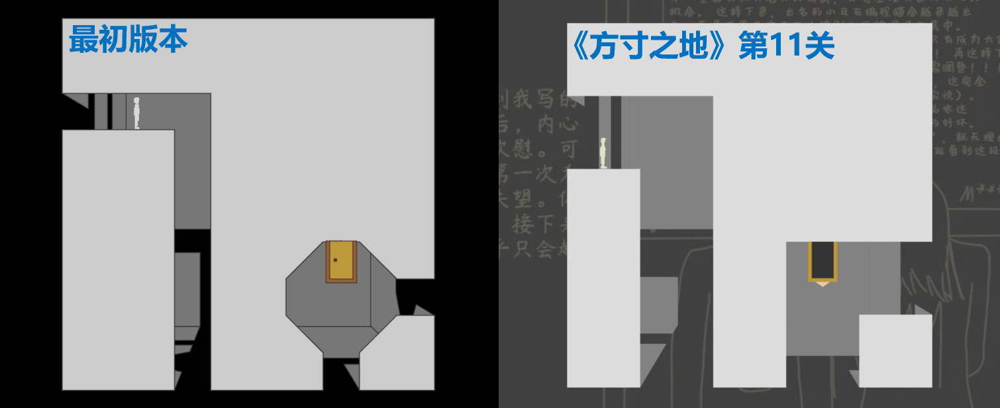

今天我在整理照片时，无意间看到了《方寸之地》的最初版本截图。回想起这一年制作游戏的经历与收获，感触良多。
一个佳作的制作过程，永远不是一条坦途。最初版本的平台有斜面，不过这也意味着碰撞判定与跑酷算法更加复杂，游戏运行的速度也会大大降低。后来为了提升游戏性能，我另起炉灶重新编写了一个新的游戏，将所有平台设为矩形，有效降低了计算量。除此之外，与旧版本一体成型的立方体不同，新版本立方体六个面的位置是分别存储的，这也让新版本的立方体得以实现了展开、坠落和爆炸的效果。在编写过程中，我借鉴了Griffpatch的跑酷碰撞判定算法，并在此基础上创新出了一个效率更高的算法；我还运用课上学到的空间向量知识，自主研发了一套3D引擎，并顺便自学了手绘。
在不懈的努力下，我成就了《方寸之地》这一佳作，更从象征呆板与固守的方寸之地中走了出来，走向了更广阔的世界，也成就了自己。
游戏主角名字小S和小M，这两个字母取自我的名字Simplay。而游戏的剧情，则是我来到猫站三年来的一件件往事、一段段回忆。三年来，我经历过大起，也经历过大落；见证过辉煌，也坠入过深渊。曾心动过，也曾失落过。为此，我将过往的经历编写成故事，制作成游戏。我塑造了小M，让她成为我情感的体验者；我也塑造了小S，让他作为希望的救赎者。可以说，Simplay的名字里，不仅有小M感性的回味，小S理性的展望，还有"play"这一象征着乐趣与精神体验的单词，当然还有“I(爱)”。
《方寸之地》的文案中写道：“你手里的画笔有一种神奇的魔法，可以把想象中的事物带到我们的面前。”这句话不仅仅送给我，更要送给屏幕前每一个热爱编程、热爱创新的人。让创新成为引路的航标，让爱成为前进的动力，搭建想象与现实之间的桥梁。我相信你我都可以在图形化编程的方寸棋盘上，尽情施展才能，执子展开自己的棋局。加油！
Simplay
2024年1月2日
